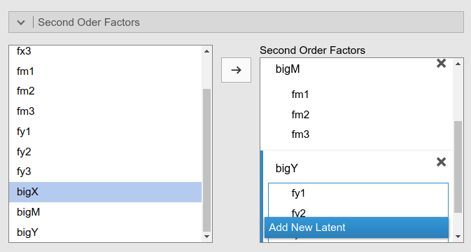
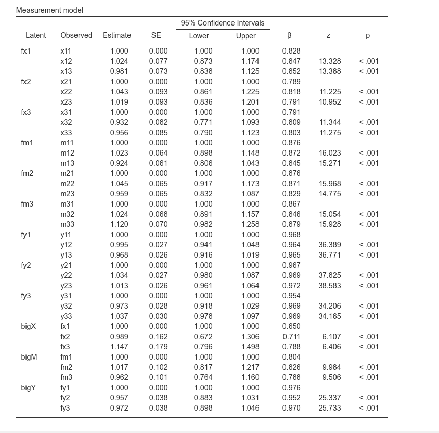
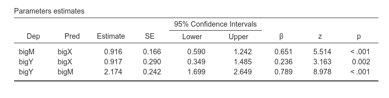
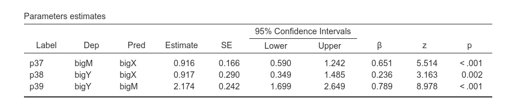
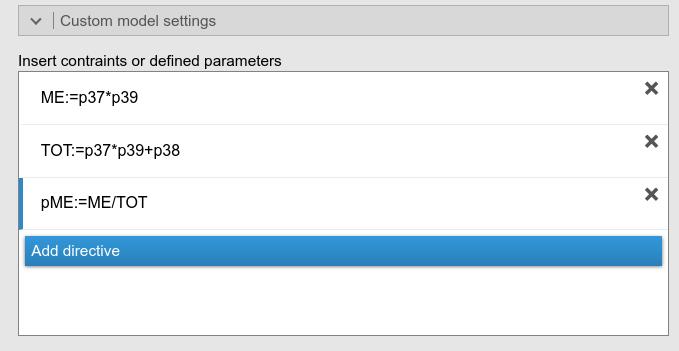
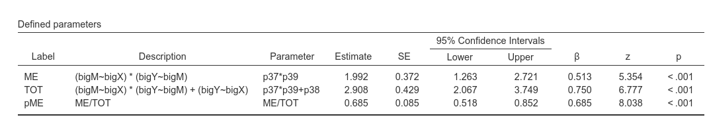

Second order mediation analysis
keywords SEM, second order factor analysis, mediation, lavaan, SEMLj, jamovi
0.7.0
Draft version, mistakes may be around
In this example we show how to estimate a second order factor analysis and mediation among second order latent variables in SEMLj.
We show input of SEMLj syntax sub-module and interactive sub-module, with particular focus on the latter one. We focus more on the setup of the model (how to run it) and less on the interpretation of the results, as we think that when you have run such a model, you know how to interpret it.
Much of the output that SEMLj produces is labeled as it is in lavaan R package output, so lots of information can be found in lavaan help and tutorials.
The data
For this example we are going to use the secondorder
dataset present in jamovi
data library after installing SEMLj. The
data are generated to feature 27 observed variables for 200 cases.
The model
Assume we have three latent variables, bigX,
bigM and bigY, such that bigX
predicts bigY, and its effect is mediated by
bigM, which functions as a mediator. Assume that each of
these latent variables is measured by three facets,
fx1,fx2 andfx3 for
bigX, fy1,fy2 andfy3
for bigY, and fm1,fm2
andfm3 for bigM. Each facet, in turn, is
measured by three observed variables, named
x[i][j],y[i][j], and m[i][j]
where i is the facet, j is the item indices.
Basically, we want to estimate the following model:
Syntax
Let’s start with the syntax. First, we want to define the nine facets in terms of their indicators
fx1=~x11+x12+x13
fx2=~x21+x22+x23
fx3=~x31+x32+x33
fm1=~m11+m12+m13
fm2=~m21+m22+m23
fm3=~m31+m32+m33
fy1=~y11+y12+y13
fy2=~y21+y22+y23
fy3=~y31+y32+y33and then, we want to define the three second order latent variables as measured by the corresponding facets.
We can now add the regression model among the second order latent variables:
Putting all together in the SEMLj syntax sub-module, we run this:
Interactive (GUI)
Facets
For the interactive module, we start setting each facet as an
exogenous latent variable (notice that setting them as endogenous would
give exactly the same results). For fx1 and
fx2 we proceed as follows:
and we keep defining the facets with their indicators
until we have nine of them.
Second order factors
We now open the Second Order Factors panel.
On the left we find the latent facets we have defined before. We
change the name Factor 1 into a name that suits us, like
bigX, and define the indicator of the second order
factor.
By pressing Add New Latent we can repeat the operation
for the other two second order factors.

Please notice that as soon as you define a new second order factor, it appears also in the input field on the left. This allows for defining third, fourth etc. order factors. We do not need this now, but it is good to know that’s possible.
Regression model
We can now open the Endogenous models panel to define the structural relationships among the second order factors.
The software already set up one slot for each latent factor. This means that we are free to decide which factor is exogenous (it will have no predictors) and which is endogenous (it will have at least one predictor). We only need to specify which factor predicts the other.
According to our theoretical model, we set the mediation as follows:
And we have done. The model is estimated.
Output
As soon as we set the input, we obtain the whole set of results tables. We do not go through the results in detail, but it is interesting to see the basic results
The info table gives some detail about the estimation, and lists the syntax resulting from our setup in the interactive input panel. We can notice that the resulting syntax is identical to the one we used before in the syntax sub-module, so we can rest assured that the results are going to be the same.

The measurement model table indicates the associations between the observed variables and the facets, and then the associations between facets and second order factors. Factor loadings are all quite large, thus the model makes sense in terms of measures.
We can also ask for the reliability of the first order factors
and check they have all a pretty good alpha and omega. At the moment, reliability is not available for second order factors (we’ll see how to improve this in future versions).
The other interesting table is the regression coefficients table.

We can see that bigX has a positive and significant
effect on bigM, which in turn has an effect on
bigY. So, mediation is warranted.
Mediated effect
But what about the mediated effect? Well, that can be asked in the Parameters Options panel by selecting Indirect Effects.
The results are straightforward
The mediated effect amounts to 1.992, corresponding to .513 in the standardized scale.
The same result can be obtained by specifying new parameters in the Custom model settings. Let’s try: First, we ask for the parameters labels, so we can refer to the coefficients with their labels.
Then we look up in the regression table the labels of the coefficients we need

We want to multiply bigX->bigM, p37, with
bigM->bigY, so p38. In addition, we add p39
to the mediated effect so we get also the total effect.
In the Custom model settings, we preceed in defining the mediated effect (ME), the total effect (TOT), and since I’m lazy, I ask to compute also the proportion of mediated effect (pME), rather than using a hand calculator:

As expected, the results are the same as the ones obtained with the indirect effects option.

PATH Diagram
If you ask for a path diagram of this model, you get a pretty ugly picture. Default settings, in fact, are not optimal for second order factors models. A better view of the model can be achieved by selecting Spring in the layout options.
The diagram is no Mona Lisa, but at least you see the model and can check that everything is as intended.
In future versions we will try to embellish the diagram for this type of models.
Alternative models
Let now assume that our mediation model has only one second order
factor, the mediator, whereas the exogenous factor (bigX)
and the endogenous factor (bigY) are first order latent
variables. Say we want to estimate the following model:
As regards the definition of bigM, nothing changes. We
defined the three facets, fm1, fm2 and
fm3, and then a second order factor in the
Second Order Factors panel, as we did before.
As regards the definition of bigX, it will now be
defined in the input variables field, because it represents an exogenous
latent variable.
As regards the definition of bigY, it will now be
defined in the input variables field, but as an endogenous latent
variable. This is because we later need it to be predicted by the other
latent variables.
We then go to the Endogenous models and fill in the regressions as before.

We have set up a model with two latent variables and one second order mediator factor.
Examples
Some worked out practical examples can be found here
Comments?
Got comments, issues or spotted a bug? Please open an issue on SEMLj at github or send me an email